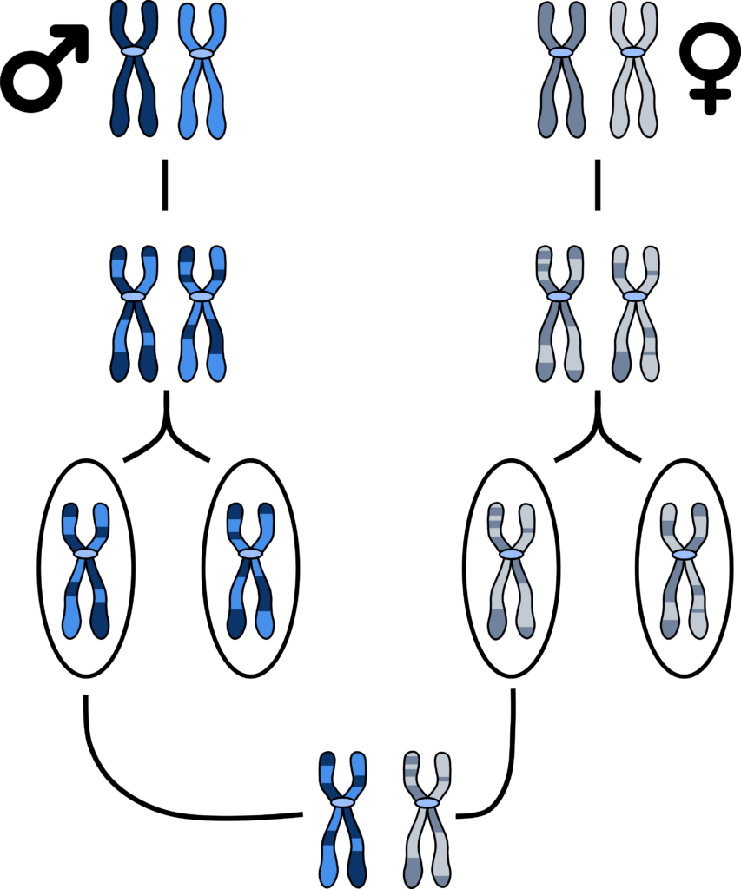

Genética y herencia
Genética y herencia
La genética se basa en la comprensión de que los genes, compuestos por ADN, son las unidades básicas de la herencia. Cada organismo tiene un conjunto de genes que determina sus características. Estos genes se encuentran en los cromosomas, que se heredan de los padres, con la mitad proveniente del padre y la otra mitad de la madre. Las leyes de la herencia fueron propuestas por Gregor Mendel, quien descubrió los principios de la dominancia y la segregación, explicando cómo se transmiten los rasgos de generación en generación. Existen dos tipos principales de herencia: la herencia mendeliana y la herencia no mendeliana. La herencia mendeliana sigue los principios básicos descubiertos por Mendel, mientras que la herencia no mendeliana incluye patrones más complejos, como la herencia ligada al sexo y la herencia poligénica. Además, factores ambientales pueden influir en la expresión de los genes, lo que resulta en una interacción entre la genética y el entorno.
